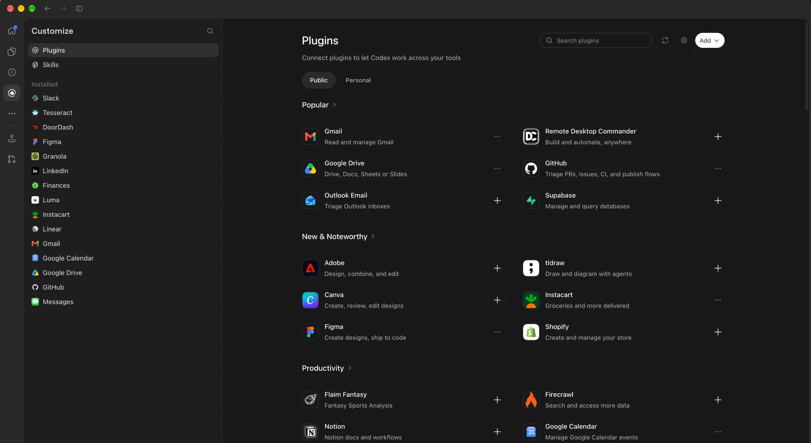

An MCP bridge for the apps you've connected in Codex. Codex keeps the logins. Your harness picks the model. No model turn, no API key.
{
"mcpServers": {
"codex-connectors": {
"command": "npx",
"args": ["-y", "@wileai/codex-connectors-mcp@latest"]
}
}
}
$ claude mcp add codex-connectors -- npx -y @wileai/codex-connectors-mcp@latest
# ~/.codex/config.toml [mcp_servers.codex-connectors] command = "npx" args = ["-y", "@wileai/codex-connectors-mcp@latest"] startup_timeout_sec = 120 tool_timeout_sec = 180
$ export CODEX_CONNECTORS_HTTP_TOKEN="$(openssl rand -hex 32)" $ npx -y @wileai/codex-connectors-mcp@latest --transport http --port 8787 # → http://127.0.0.1:8787/mcp · Authorization: Bearer $TOKEN
Requires Node.js 22.19+ and a signed-in Codex CLI (codex login).
Connect an app once in Codex — Gmail, GitHub, Figma, Linear, Slack, Google Drive, Notion, anything in the catalog — and use it from any agent harness through this extension.

Codex already did the hard part: OAuth flows, token refresh, and a growing catalog of first-party app integrations. codex-connectors-mcp lifts those connected apps out of Codex and serves their tools over the Model Context Protocol, so any client that speaks MCP stdio or Streamable HTTP can call them.
Your harness never sees a credential. It sees tool names, schemas and results — exactly as Codex's app-server reports them, without truncation.
Any client with MCP stdio or Streamable HTTP support that runs as the user signed in to Codex.
The bridge drives Codex's own app-server directly. It never starts a model turn, so there's no inference cost and no second model in the loop.
turn/startMCP stdio | Streamable HTTP → JSON-RPC over stdio → mcpServer/tool/call
codex app-server --listen stdio:// and initialize its experimental API.app/installed and keep only apps Codex reports as enabled and callable, filtered by your allowlist.mcpServerStatus/list and join codex_apps tools to their apps by connector id.mcpServer/tool/call, preserving content blocks, structured content, errors and metadata.Every enabled connector tool appears in tools/list with its full input schema and provider annotations, under stable ASCII names of 64 characters or fewer.
github_get_profile_3b5eaf4306c5 <app>_<tool>_<hash> for every other tool … plus the three dispatcher tools
Only three tools. Everything stays callable through the dispatcher, which is handy when a harness caps tool counts or hundreds of schemas would crowd the context.
codex_connectors({"connector":"GitHub","query":"profile"}) codex_connector_schema({"tool":"github.get_profile"}) codex_connector_call({"tool":"github.get_profile", "arguments":{}})
| Tool | Purpose |
|---|---|
codex_connectors | List apps; filter tools by connector and/or query; paginate with offset/limit; reload with refresh: true. |
codex_connector_schema | The full original tool definition, plus its exposed name. |
codex_connector_call | Call by original or exposed name with an arguments object. |
Anything not marked read-only goes through a write policy. By default you approve each write through MCP form elicitation, which shows the exact tool and arguments.
The bridge shows the tool and its arguments in an elicitation form. Clients that can't elicit can't write.
For harnesses that already confirm MCP calls. The bridge adds no extra prompt.
Reject anything not marked read-only, and everything marked destructive.
Calls time out after 120 s. If a write's outcome is unknown (timeout, cancellation, app-server crash), the bridge never retries it and blocks further writes until you've checked the app. Approval payloads over 20,000 characters fail rather than being silently shortened.
| Variable | Default | Purpose |
|---|---|---|
CODEX_CONNECTORS_CODEX | codex | Path to the Codex executable. |
CODEX_CONNECTORS_MODE | direct | direct or compact. |
CODEX_CONNECTORS_WRITES | ask | ask, allow or deny. |
CODEX_CONNECTORS_ALLOW | All eligible apps | Comma-separated connector names or IDs, case-insensitive. An explicitly empty value exposes nothing. |
CODEX_CONNECTORS_HTTP_TOKEN | Unset | Bearer token for HTTP transport, at least 32 characters. |
CLI flags: --transport stdio|http, --mode direct|compact, --port 8787, --help. Diagnostics go to stderr; stdout carries only MCP messages.
For clients that want a URL instead of a subprocess. The listener binds to loopback only, checks Host and Origin, and requires the bearer token on every request.
Up to 16 independent sessions, each with its own lazily started app-server. Idle sessions expire after 30 minutes.
{
"url": "http://127.0.0.1:8787/mcp",
"headers": {
"Authorization": "Bearer <CODEX_CONNECTORS_HTTP_TOKEN>"
}
}
The bridge never calls turn/start. Your harness's model does the thinking; Codex just serves the apps.
Authentication stays with your codex login. The bridge doesn't read credentials itself.
Connector responses are forwarded, never written to disk, and never truncated.
A write with an unknown outcome is never retried, and it blocks further writes until you've checked.
It's a local, single-account bridge. Cloud-only harnesses need their own secured route to it.
It bridges a plugin's app tools. Skills bundled with a Codex plugin stay in Codex.
Installing the bridge means sharing app names, tool schemas and tool results with your harness and its model provider. Read-only tools can still return private data, so use CODEX_CONNECTORS_ALLOW to share only the apps you intend to.